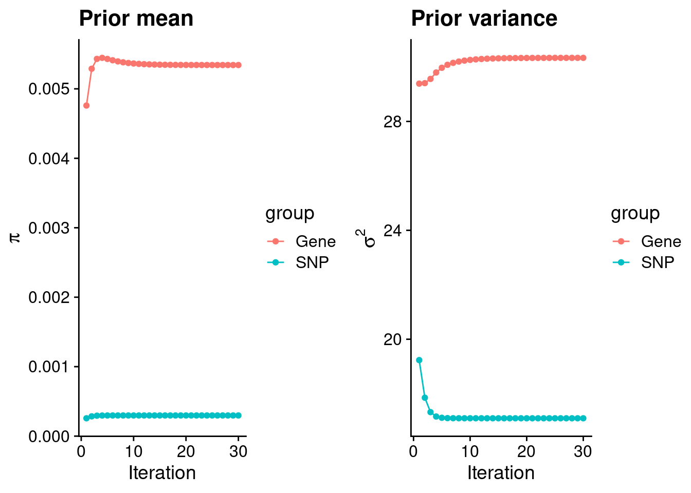
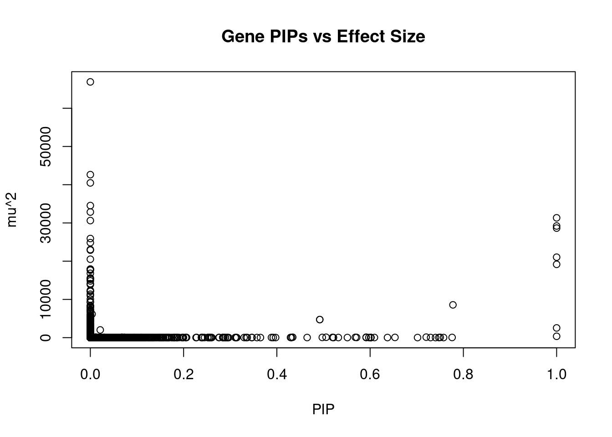
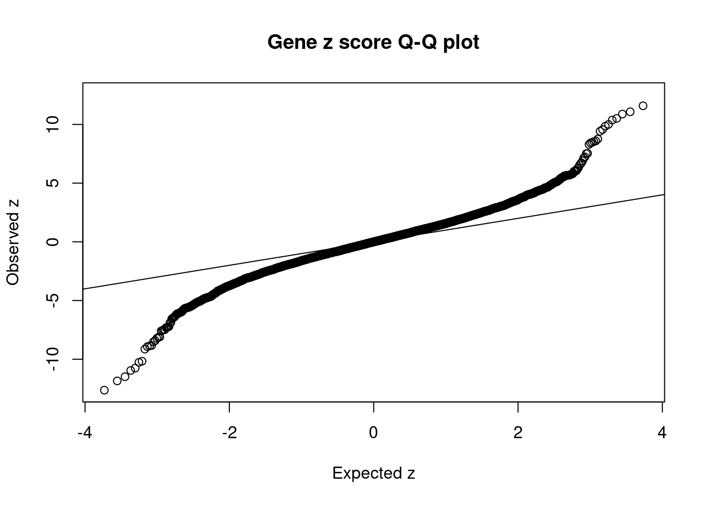
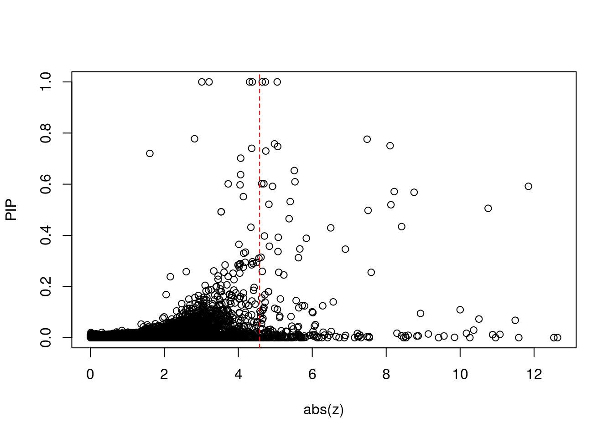
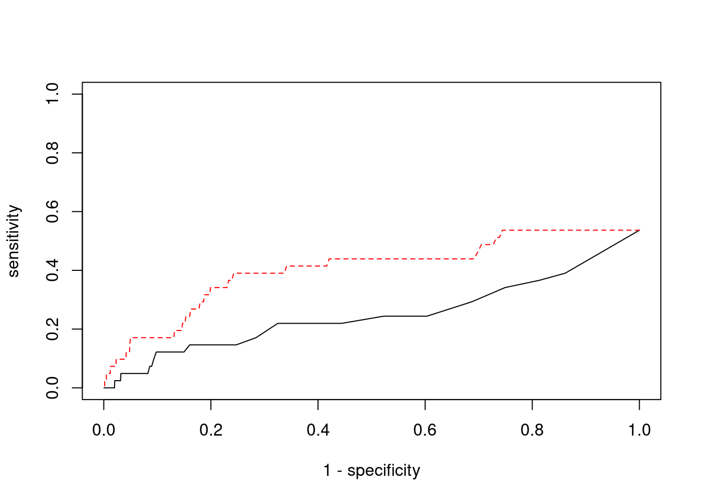

Last updated: 2022-02-13
Checks: 6 1
Knit directory: cTWAS_analysis/
This reproducible R Markdown analysis was created with workflowr (version 1.6.2). The Checks tab describes the reproducibility checks that were applied when the results were created. The Past versions tab lists the development history.
Great! Since the R Markdown file has been committed to the Git repository, you know the exact version of the code that produced these results.
Great job! The global environment was empty. Objects defined in the global environment can affect the analysis in your R Markdown file in unknown ways. For reproduciblity it’s best to always run the code in an empty environment.
The command set.seed(20211220) was run prior to running the code in the R Markdown file. Setting a seed ensures that any results that rely on randomness, e.g. subsampling or permutations, are reproducible.
Great job! Recording the operating system, R version, and package versions is critical for reproducibility.
Nice! There were no cached chunks for this analysis, so you can be confident that you successfully produced the results during this run.
Using absolute paths to the files within your workflowr project makes it difficult for you and others to run your code on a different machine. Change the absolute path(s) below to the suggested relative path(s) to make your code more reproducible.
| absolute | relative |
|---|---|
| /project2/xinhe/shengqian/cTWAS/cTWAS_analysis/data/ | data |
| /project2/xinhe/shengqian/cTWAS/cTWAS_analysis/code/ctwas_config.R | code/ctwas_config.R |
Great! You are using Git for version control. Tracking code development and connecting the code version to the results is critical for reproducibility.
The results in this page were generated with repository version eb13ecf. See the Past versions tab to see a history of the changes made to the R Markdown and HTML files.
Note that you need to be careful to ensure that all relevant files for the analysis have been committed to Git prior to generating the results (you can use wflow_publish or wflow_git_commit). workflowr only checks the R Markdown file, but you know if there are other scripts or data files that it depends on. Below is the status of the Git repository when the results were generated:
Ignored files:
Ignored: .ipynb_checkpoints/
Untracked files:
Untracked: code/.ipynb_checkpoints/
Untracked: code/AF_out/
Untracked: code/BMI_out/
Untracked: code/T2D_out/
Untracked: code/ctwas_config.R
Untracked: code/mapping.R
Untracked: code/out/
Untracked: code/run_AF_analysis.sbatch
Untracked: code/run_AF_analysis.sh
Untracked: code/run_AF_ctwas_rss_LDR.R
Untracked: code/run_BMI_analysis.sbatch
Untracked: code/run_BMI_analysis.sh
Untracked: code/run_BMI_ctwas_rss_LDR.R
Untracked: code/run_T2D_analysis.sbatch
Untracked: code/run_T2D_analysis.sh
Untracked: code/run_T2D_ctwas_rss_LDR.R
Untracked: data/.ipynb_checkpoints/
Untracked: data/AF/
Untracked: data/BMI/
Untracked: data/T2D/
Untracked: data/UKBB/
Untracked: data/UKBB_SNPs_Info.text
Untracked: data/gene_OMIM.txt
Untracked: data/gene_pip_0.8.txt
Untracked: data/mashr_Heart_Atrial_Appendage.db
Untracked: data/summary_known_genes_annotations.xlsx
Untracked: data/untitled.txt
Note that any generated files, e.g. HTML, png, CSS, etc., are not included in this status report because it is ok for generated content to have uncommitted changes.
These are the previous versions of the repository in which changes were made to the R Markdown (analysis/BMI_Brain_Spinal_cord_cervical_c-1.Rmd) and HTML (docs/BMI_Brain_Spinal_cord_cervical_c-1.html) files. If you’ve configured a remote Git repository (see ?wflow_git_remote), click on the hyperlinks in the table below to view the files as they were in that past version.
| File | Version | Author | Date | Message |
|---|---|---|---|---|
| Rmd | eb13ecf | sq-96 | 2022-02-13 | update |
| html | e6bc169 | sq-96 | 2022-02-13 | Build site. |
| Rmd | 87fee8b | sq-96 | 2022-02-13 | update |
[1] 10532
1 2 3 4 5 6 7 8 9 10 11 12 13 14 15 16
1032 741 611 415 500 593 513 394 399 413 617 585 228 354 366 467
17 18 19 20 21 22
630 170 801 314 124 265 [1] 8584[1] 0.8150399
********************************************************Note: As of version 1.0.0, cowplot does not change the default ggplot2 theme anymore. To recover the previous behavior, execute:
theme_set(theme_cowplot())********************************************************
| Version | Author | Date |
|---|---|---|
| e6bc169 | sq-96 | 2022-02-13 |
gene snp
0.0053427438 0.0002972845 gene snp
30.33477 17.09673 [1] 336107[1] 10532 7535010 gene snp
0.005078533 0.113944037 [1] 0.4380626 15.3065312
| Version | Author | Date |
|---|---|---|
| e6bc169 | sq-96 | 2022-02-13 |
genename region_tag susie_pip mu2 PVE z
9777 KLHDC8B 3_34 1.0000000 2542.57627 7.564782e-03 -5.051557
789 SDHA 5_1 1.0000000 21042.52138 6.260661e-02 3.012479
11293 AC078842.3 7_84 1.0000000 19171.29914 5.703927e-02 -3.207993
4274 IGHMBP2 11_38 1.0000000 31336.96431 9.323508e-02 -4.378813
5140 MFAP1 15_16 1.0000000 29203.27973 8.688685e-02 4.302998
695 MAPK6 15_21 1.0000000 28649.03417 8.523784e-02 -4.646216
7232 PPM1M 3_36 0.9999999 352.45212 1.048631e-03 4.731816
1472 ASCC2 22_10 0.7776235 8574.76169 1.983873e-02 -2.815534
8471 EFEMP2 11_36 0.7758290 50.60634 1.168136e-04 -7.483691
12868 PANO1 11_1 0.7575940 27.27802 6.148538e-05 4.978592
3443 ZMIZ2 7_33 0.7504608 67.76347 1.513025e-04 -8.105339
7328 ZNF12 7_9 0.7474493 28.09975 6.248944e-05 5.064700
1464 RASD2 22_14 0.7402740 24.87497 5.478700e-05 -4.361708
12828 RP11-340F14.6 12_74 0.7297061 30.01736 6.516929e-05 -4.742464
11162 VPS52 6_28 0.7203038 127.03285 2.722414e-04 1.606101
2760 PDCD10 3_103 0.7017297 23.84490 4.978378e-05 -4.064505
2845 ITGB6 2_96 0.6533228 59.14060 1.149572e-04 5.514945
3959 KLK14 19_35 0.6372520 28.25002 5.356147e-05 -4.061766
1588 NINL 20_19 0.6092758 34.74160 6.297761e-05 -5.532192
1304 CBX5 12_33 0.6017194 25.83998 4.626033e-05 4.691159
num_eqtl
9777 2
789 1
11293 1
4274 1
5140 1
695 1
7232 2
1472 2
8471 2
12868 2
3443 1
7328 2
1464 2
12828 2
11162 1
2760 1
2845 1
3959 1
1588 2
1304 1
| Version | Author | Date |
|---|---|---|
| e6bc169 | sq-96 | 2022-02-13 |
genename region_tag susie_pip mu2 PVE z num_eqtl
10032 SLC38A3 3_35 0 66888.53 0.00000000 6.725828 1
7397 CCDC171 9_13 0 42632.91 0.00000000 8.471161 2
38 RBM6 3_35 0 40475.73 0.00000000 12.536042 1
7227 MST1R 3_35 0 34543.29 0.00000000 -12.635394 2
8111 CALML6 1_1 0 32850.88 0.00000000 -5.718338 1
4274 IGHMBP2 11_38 1 31336.96 0.09323508 -4.378813 1
9078 STX19 3_59 0 30618.53 0.00000000 -5.059656 1
5140 MFAP1 15_16 1 29203.28 0.08688685 4.302998 1
695 MAPK6 15_21 1 28649.03 0.08523784 -4.646216 1
1280 WDR76 15_16 0 25920.29 0.00000000 4.454356 1
2418 CPT1A 11_38 0 24846.46 0.00000000 -4.676837 1
4970 TMOD3 15_21 0 23045.27 0.00000000 5.411998 1
7223 RNF123 3_35 0 22889.67 0.00000000 -10.959165 1
789 SDHA 5_1 1 21042.52 0.06260661 3.012479 1
4873 TUBGCP4 15_16 0 20509.43 0.00000000 3.366163 1
11293 AC078842.3 7_84 1 19171.30 0.05703927 -3.207993 1
7966 ADAL 15_16 0 17919.16 0.00000000 -2.861302 1
7967 LCMT2 15_16 0 17919.16 0.00000000 -2.861302 1
9868 HYAL3 3_35 0 17850.05 0.00000000 6.264073 2
859 MCM6 2_80 0 17636.26 0.00000000 -3.886179 1 genename region_tag susie_pip mu2 PVE z
4274 IGHMBP2 11_38 1.00000000 31336.96431 9.323508e-02 -4.378813
5140 MFAP1 15_16 1.00000000 29203.27973 8.688685e-02 4.302998
695 MAPK6 15_21 1.00000000 28649.03417 8.523784e-02 -4.646216
789 SDHA 5_1 1.00000000 21042.52138 6.260661e-02 3.012479
11293 AC078842.3 7_84 1.00000000 19171.29914 5.703927e-02 -3.207993
1472 ASCC2 22_10 0.77762350 8574.76169 1.983873e-02 -2.815534
9777 KLHDC8B 3_34 1.00000000 2542.57627 7.564782e-03 -5.051557
262 CPS1 2_124 0.49202420 4722.14667 6.912711e-03 3.534889
2872 LANCL1 2_124 0.49202420 4722.14667 6.912711e-03 -3.534889
7232 PPM1M 3_36 0.99999991 352.45212 1.048631e-03 4.731816
11162 VPS52 6_28 0.72030380 127.03285 2.722414e-04 1.606101
8727 ASPHD1 16_24 0.59150663 120.67330 2.123700e-04 -11.848514
10189 ATP2A1 16_23 0.50557684 100.96198 1.518684e-04 -10.759014
3443 ZMIZ2 7_33 0.75046079 67.76347 1.513025e-04 -8.105339
6433 GPR61 1_67 0.56829014 81.16210 1.372290e-04 8.755235
10756 LY6G5C 6_26 0.43404866 106.00275 1.368920e-04 8.417860
12619 CTD-2186M15.3 5_22 0.02120586 2014.86154 1.271228e-04 2.933876
8471 EFEMP2 11_36 0.77582899 50.60634 1.168136e-04 -7.483691
2845 ITGB6 2_96 0.65332282 59.14060 1.149572e-04 5.514945
13013 DHRS11 17_22 0.51954196 63.45942 9.809326e-05 -8.128326
num_eqtl
4274 1
5140 1
695 1
789 1
11293 1
1472 2
9777 2
262 1
2872 1
7232 2
11162 1
8727 1
10189 1
3443 1
6433 1
10756 1
12619 2
8471 2
2845 1
13013 1 genename region_tag susie_pip mu2 PVE z
7227 MST1R 3_35 0.000000e+00 34543.28743 0.000000e+00 -12.635394
38 RBM6 3_35 0.000000e+00 40475.72984 0.000000e+00 12.536042
8727 ASPHD1 16_24 5.915066e-01 120.67330 2.123700e-04 -11.848514
1048 EFR3B 2_15 1.114961e-08 203.24843 6.742318e-12 11.586593
8728 KCTD13 16_24 6.773020e-02 115.83721 2.334280e-05 -11.490673
8068 INO80E 16_24 1.260053e-02 103.17532 3.868004e-06 11.076716
7223 RNF123 3_35 0.000000e+00 22889.67075 0.000000e+00 -10.959165
1721 MAPK3 16_24 1.145581e-02 103.03163 3.511713e-06 10.880016
10189 ATP2A1 16_23 5.055768e-01 100.96198 1.518684e-04 -10.759014
11438 NPIPB7 16_23 7.272766e-02 100.96337 2.184670e-05 10.509650
10225 SULT1A1 16_23 2.946593e-02 99.06621 8.684967e-06 10.367233
10271 C6orf106 6_28 5.814351e-05 124.59696 2.155416e-08 -10.263559
10322 SULT1A2 16_23 1.683314e-02 95.71737 4.793783e-06 -10.171155
7747 ZNF668 16_24 1.090314e-01 80.22421 2.602433e-05 10.000364
5341 SAE1 19_33 1.095253e-03 100.68705 3.281034e-07 9.848747
8426 C1QTNF4 11_29 6.345703e-03 90.11964 1.701460e-06 9.563515
11752 LINC00461 5_52 8.338963e-11 357.44552 8.868381e-14 9.418048
10335 IL27 16_23 1.421364e-02 81.11968 3.430472e-06 -9.140265
8427 NEGR1 1_46 9.461144e-02 76.49903 2.153387e-05 -8.928461
7515 PSMC3 11_29 6.783380e-03 78.60556 1.586434e-06 -8.866477
num_eqtl
7227 2
38 1
8727 1
1048 1
8728 1
8068 1
7223 1
1721 1
10189 1
11438 1
10225 1
10271 1
10322 2
7747 1
5341 1
8426 1
11752 1
10335 1
8427 1
7515 1
| Version | Author | Date |
|---|---|---|
| e6bc169 | sq-96 | 2022-02-13 |

| Version | Author | Date |
|---|---|---|
| e6bc169 | sq-96 | 2022-02-13 |
[1] 0.02136346 genename region_tag susie_pip mu2 PVE z
7227 MST1R 3_35 0.000000e+00 34543.28743 0.000000e+00 -12.635394
38 RBM6 3_35 0.000000e+00 40475.72984 0.000000e+00 12.536042
8727 ASPHD1 16_24 5.915066e-01 120.67330 2.123700e-04 -11.848514
1048 EFR3B 2_15 1.114961e-08 203.24843 6.742318e-12 11.586593
8728 KCTD13 16_24 6.773020e-02 115.83721 2.334280e-05 -11.490673
8068 INO80E 16_24 1.260053e-02 103.17532 3.868004e-06 11.076716
7223 RNF123 3_35 0.000000e+00 22889.67075 0.000000e+00 -10.959165
1721 MAPK3 16_24 1.145581e-02 103.03163 3.511713e-06 10.880016
10189 ATP2A1 16_23 5.055768e-01 100.96198 1.518684e-04 -10.759014
11438 NPIPB7 16_23 7.272766e-02 100.96337 2.184670e-05 10.509650
10225 SULT1A1 16_23 2.946593e-02 99.06621 8.684967e-06 10.367233
10271 C6orf106 6_28 5.814351e-05 124.59696 2.155416e-08 -10.263559
10322 SULT1A2 16_23 1.683314e-02 95.71737 4.793783e-06 -10.171155
7747 ZNF668 16_24 1.090314e-01 80.22421 2.602433e-05 10.000364
5341 SAE1 19_33 1.095253e-03 100.68705 3.281034e-07 9.848747
8426 C1QTNF4 11_29 6.345703e-03 90.11964 1.701460e-06 9.563515
11752 LINC00461 5_52 8.338963e-11 357.44552 8.868381e-14 9.418048
10335 IL27 16_23 1.421364e-02 81.11968 3.430472e-06 -9.140265
8427 NEGR1 1_46 9.461144e-02 76.49903 2.153387e-05 -8.928461
7515 PSMC3 11_29 6.783380e-03 78.60556 1.586434e-06 -8.866477
num_eqtl
7227 2
38 1
8727 1
1048 1
8728 1
8068 1
7223 1
1721 1
10189 1
11438 1
10225 1
10271 1
10322 2
7747 1
5341 1
8426 1
11752 1
10335 1
8427 1
7515 1[1] 41[1] 22[1] 4.57565[1] 7[1] 225 genename region_tag susie_pip mu2 PVE z num_eqtl
789 SDHA 5_1 1 21042.52 0.06260661 3.012479 1
11293 AC078842.3 7_84 1 19171.30 0.05703927 -3.207993 1
4274 IGHMBP2 11_38 1 31336.96 0.09323508 -4.378813 1
5140 MFAP1 15_16 1 29203.28 0.08688685 4.302998 1 ctwas TWAS
0.00000000 0.07317073 ctwas TWAS
0.9993340 0.9788773 ctwas TWAS
0.00000000 0.01333333 
| Version | Author | Date |
|---|---|---|
| e6bc169 | sq-96 | 2022-02-13 |
sessionInfo()R version 3.6.1 (2019-07-05)
Platform: x86_64-pc-linux-gnu (64-bit)
Running under: Scientific Linux 7.4 (Nitrogen)
Matrix products: default
BLAS/LAPACK: /software/openblas-0.2.19-el7-x86_64/lib/libopenblas_haswellp-r0.2.19.so
locale:
[1] LC_CTYPE=en_US.UTF-8 LC_NUMERIC=C
[3] LC_TIME=en_US.UTF-8 LC_COLLATE=en_US.UTF-8
[5] LC_MONETARY=en_US.UTF-8 LC_MESSAGES=en_US.UTF-8
[7] LC_PAPER=en_US.UTF-8 LC_NAME=C
[9] LC_ADDRESS=C LC_TELEPHONE=C
[11] LC_MEASUREMENT=en_US.UTF-8 LC_IDENTIFICATION=C
attached base packages:
[1] stats graphics grDevices utils datasets methods base
other attached packages:
[1] readxl_1.3.1 cowplot_1.0.0 ggplot2_3.3.5 workflowr_1.6.2
loaded via a namespace (and not attached):
[1] tidyselect_1.1.1 xfun_0.29 purrr_0.3.4 colorspace_2.0-2
[5] vctrs_0.3.8 generics_0.1.1 htmltools_0.5.2 yaml_2.2.1
[9] utf8_1.2.2 blob_1.2.2 rlang_0.4.12 jquerylib_0.1.4
[13] later_0.8.0 pillar_1.6.4 glue_1.5.1 withr_2.4.3
[17] DBI_1.1.1 bit64_4.0.5 lifecycle_1.0.1 stringr_1.4.0
[21] cellranger_1.1.0 munsell_0.5.0 gtable_0.3.0 evaluate_0.14
[25] memoise_2.0.1 labeling_0.4.2 knitr_1.36 fastmap_1.1.0
[29] httpuv_1.5.1 fansi_0.5.0 highr_0.9 Rcpp_1.0.7
[33] promises_1.0.1 scales_1.1.1 cachem_1.0.6 farver_2.1.0
[37] fs_1.5.2 bit_4.0.4 digest_0.6.29 stringi_1.7.6
[41] dplyr_1.0.7 rprojroot_2.0.2 grid_3.6.1 tools_3.6.1
[45] magrittr_2.0.1 tibble_3.1.6 RSQLite_2.2.8 crayon_1.4.2
[49] whisker_0.3-2 pkgconfig_2.0.3 ellipsis_0.3.2 data.table_1.14.2
[53] assertthat_0.2.1 rmarkdown_2.11 R6_2.5.1 git2r_0.26.1
[57] compiler_3.6.1